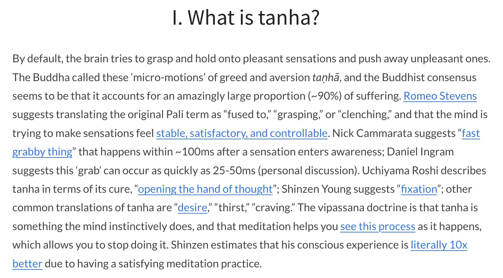

Update - Roger read this and replied with some useful stuff → I’m not gonna publish his messages to me here ofc, just note to self
The practice
- Settle in, some deeper regulating breaths (waking up + relaxing). Set intention to do the meditation well.
- Body scan — become familiar with sensations throughout the body (look for blind spots, hover on those, try to fill them in)
- Zoom out, feel whole body at once, become familiar with general state of the body.
- Do a quick tour through each sense gate in turn: sight, sound, smell, taste, mental image, mental sound, and emotion
- Expand to open awareness of the whole experience space with all the senses, then spend 10 min or so noting each sense as they arrive
- Continue in this vein, but drop the noting and instead when you notice a sense deliberately make the connection to where you somatically feel (notice how the other senses cause somatic sensations and where). Proceed for the rest of the meditation like this — make sure to make the connection with all the sense (including thoughts)
My issues
1. A lot to remember!
- It feels like this is a lot of instruction to remember
- As a result, yesterday I listened to Roger’s “Multisensory Multitasking (guided meditative workout 40min)” for ~30 mins first, to get guided through something similar, rather than having to try to hold all these instructions in my head
- Feel like to do it solo, I’d have to have a bunch of timers going etc
2. “Notice what you somatically feel”
- I was doing this practice yesterday, and it just felt mundane
- Maybe my concentration isn’t sharp enough, maybe doubt is getting in the way, or maybe I just wasn’t remembering to look at multiple sense doors deliberately (I think it was this one)
- But it felt like “ok, there’s a somatic feeling associated with the sound of the AC, it’s a slight holding in my face that corresponds with the direction of where the AC is”, same with “sound of gf typing, there’s a somatic feeling that corresponds” - but that’s it
- I was only really noticing it with sounds, and it just felt mundane. “Ok, I guess I have somatic sensations that ~help me map where something is in 3d space…”
- The idea of doing this for an hour feels aversive b/c boring, non-profound, and I was only really noticing it for sounds. I feel doubt, grumpiness at the idea of wasting time
Path forwards
- So I guess that shows a path forwards:
- Try to notice it for more senses
- Interface with the doubt
Interfacing w/ the doubt
- The below writeup has helped a little bit, “mind-body connection” feels like a slightly useful phrase, maybe I can explore that more
3. I really like Charlie Awbery/Sasha Chapin open awareness
- The “path to value” feels obvious to me there: notice where I’m tensing, notice where I’m interacting, and progressively relax/drop
- This feels like a “tanha” or “clinging” practice, or an emptiness practice
- I guess Roger’s one is an insight practice: “notice more how things have a somatic component, so that… something something… parts work…”
- I just feel like I’m gonna be noticing that the sound of the AC has a subtle sensation associated with it and like… ok…
- But I guess maybe it’s like, noticing mind-body connection…
What’s the point of the somatic awareness practice?
- Let’s steelman it, or clarify it
- Ok, I remember Roger saying that dukkha is somatic: it doesn’t exist in e.g. sights, sounds etc
- So if you notice somatics more, you’ll notice holding/tension more, which means you can be with the first dart, release the second dart, relax etc
- Rather than a sense of “I’m sat outside at a cafe in Lisbon w/ my gf and it’s way too hot and I’m miserable”, more like “oh, these feelings/thoughts correspond to these specific somatic sensations”, which gives more freedom?
- I’m thinking of the “vasocomputation” stuff here too
- I guess the Sasha Chapin/Charlie Awbery stuff is like, global relaxation/dropping, and this is maybe more of a vipassana “look directly at the holding” thing
- I guess too, from an ignorance/moha POV, it feels more aversive to look at the thing, vs to just globally relax.
Tanha
- From “https://opentheory.net/2023/07/principles-of-vasocomputation-a-unification-of-buddhist-phenomenology-active-inference-and-physical-reflex-part-i/”

- I guess it doesn’t feel like Roger’s open awareness practice does anything about this yet, it’s just noticing somatics, which feels less direct/satisfying. But I guess he will have recommended this over more direct stuff for a reason? Or can we skip ahead? That’s my open question right now
- ” Romeo Stevens suggests translating the original Pali term as “fused to,” “grasping,” or “clenching,” and that the mind is trying to make sensations feel stable, satisfactory, and controllable.” - I guess the somatic meditation is noticing how e.g. I’m “fused to” the sound of the AC?
22:44 update → I did it and it was good!
Dictated to Claude, transcribed and organised below.
- Below is therefore not super super trustworthy → I dislike how Claude writes and it may make stronger claims than intended. But probably 80% right, definitely “directionally correct”
The turn: “maybe I just have alexithymia”
- Going in, for the first 5-10 mins of the meditation, I was half-drafting a message to Roger in my head: I think I just need to come out as having alexithymia. Like I genuinely don’t have many sensations in my body.
- I was reaching for other maps that say the same thing — Taurus moon, an endurer archetype, human design saying I have an empty heart space. All made-up, but I think the maps point at a territory, and the territory looked empty.
- Then: well, let’s just look a bit closer. Maybe what I’m doing is expecting it to be really big and obvious.
- That was the move. Once I dropped the size requirement, there was a bunch of subtle stuff.
- Alex sidebar, man I hate how Claude writes
What I actually found (and it wasn’t just sounds)
Yesterday I only caught it for sounds. Tonight, across several sense doors:
- Worry → a squirmy feeling in my stomach. Really looked at it, maybe for the first time. Somatically quite different from worry in my chest — definitely different sensations, not one blurry “worry”.
- Daydreaming → the visual of the daydream migrated across my visual field, like its x/y coordinates changed, and there was facial tension tracking that movement.
- Annoyance → an angry expression on my face.
- Trying to figure something out → a frowning, effortful expression.
- Relief (at remembering something) → an actual somatic event, not just a mental one.
So: not empty. Just quiet.
The key thing: I can’t hold thought and soma at the same time
- I don’t foreground thoughts or daydreams — I treat them as bad, as distraction, rather than as things to take seriously as objects.
- When I think or visualise, I fully collapse into it. Left-hemisphere capture, collapsed awareness. I don’t notice bodily sensations concurrently.
- What actually happens is: I spot that I’m doing it → become mindful/awake again → drop it → and then notice what somatics are still residually present from that time.
- So my access to the somatic layer of thought is retrospective, not simultaneous. That’s the actual mechanism, and it’s why it felt like nothing was there.
Did it touch tanha? → yes, for the first time
- Getting lost in a work thought, coming back, and seeing that I’d been frowning and tensing — that’s the vasocomputation thing, live.
- It felt like I was seeing active inference. A grabby, willing-things-to-be-different thing, directly observed.
- Same with a smaller one: the desire to sink further into my seat, showing up as a somatic downward pull, like gravity. Oh — that’s active inference too.
- So the morning’s open question (“does this practice do anything about tanha, or can I skip ahead?”) got a partial answer: it does, and I don’t need to skip ahead yet.
Verdict on this morning’s three complaints
- “A lot to remember” — still stands, but I routed around it. I ran it solo and dropped the sequence entirely, just doing open awareness rather than deliberately touring each sense door. Without Roger guiding or the list in front of me, the full protocol still feels daunting. When he guided me on a call, I got things I’d never reach alone (inner vs outer vision, senses I’d never think to check). → Open: I want the list in front of me, or his guidance, to get the full version.
- “It felt mundane” — gone. It took about 10 minutes to get through the doubt and scepticism, and then I got engaged and found it fruitful and interesting. That’s a pretty big win.
- “I prefer Awbery/Chapin open awareness” — partly stands. This was less concentrated and more lost in thought than my eyes-open version. But it was doing different work, and the work was worth it.